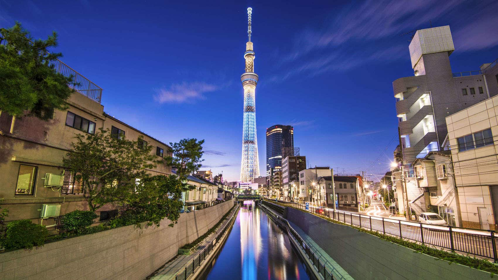
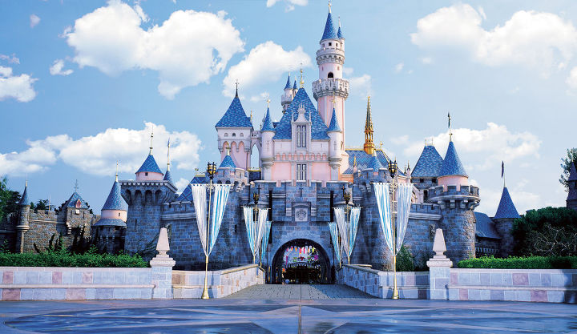
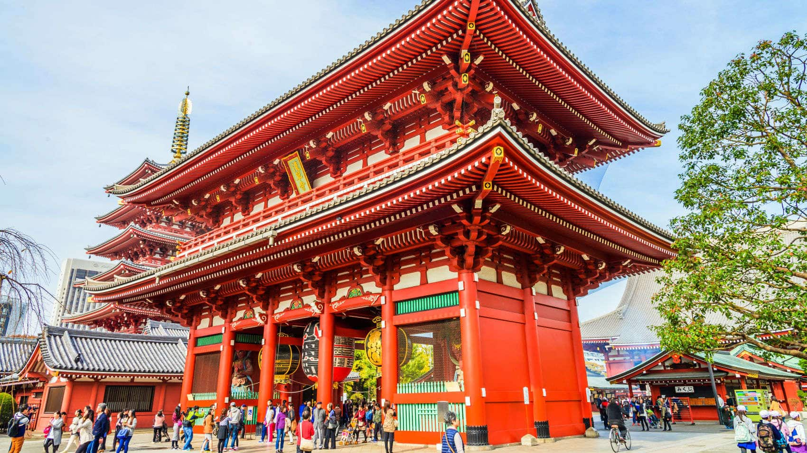
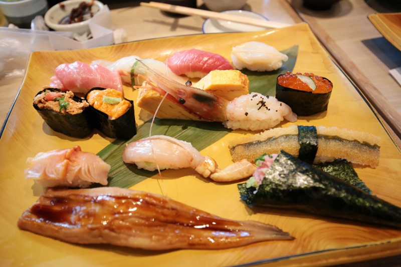
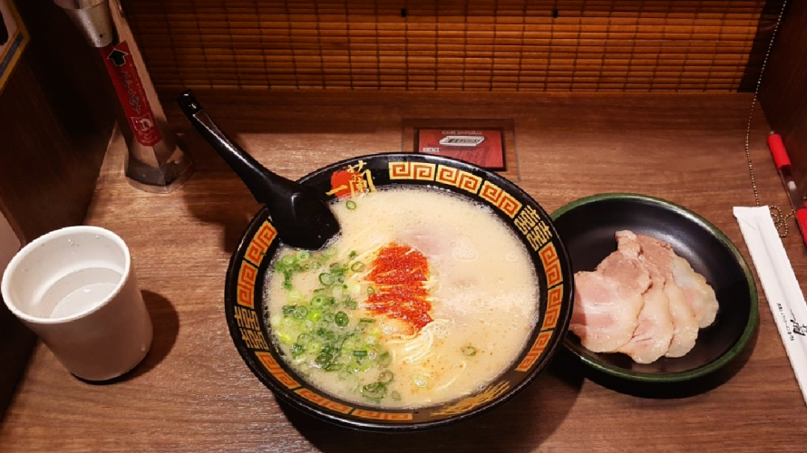
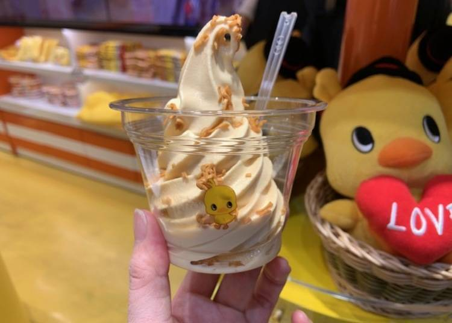

지상 450m의 경치, 도쿄 스카이 트리!
높이 634m의 도쿄 스카이트리는 도쿄에서 가장 높은 건물이랍니다. 도쿄 어디서든 이 방송탑을 볼 수 있어요. 2개의 전망대와 고급 레스토랑, 카페가 있어 관광객들이 많이 찾는 곳입니다. 이 탑은 특히 밤에 더욱 더 아름다워요. 매일 다른 패턴으로 조명을 밝히고 있거든요.방문객들의 접근이 허용되는 최상층은 지상 451m 높이로, 이곳에는 하늘 위에 떠 있는 느낌을 주기 위해서 특별하게 설계된 공간이 마련되어 있습니다. 도쿄 스카이트리의 1층에는 300개 이상의 상점, 레스토랑, 아쿠아리움과 천문관 등 볼거리와 즐길거리가 가득한 솔라마치 쇼핑단지도 있어요.

퍼레이드와 함께 즐기는 디즈니랜드 in 도쿄!
도쿄 외곽 지바 현에 위치한 도쿄 디즈니랜드는 사람들이 가족들과 함께 방문하는 놀이공원으로 굉장히 인기가 많은 곳입니다. 1983년 개장했으며 4개의 테마랜드가 있어요. 어드벤처랜드, 웨스턴랜드, 판타지랜드, 투모로랜드랍니다. 일행을 잃어버리면 탑처럼 높이 솟은 신데렐라 성으로 가세요. 이 테마파크에서 만남의 장소 역할을 하고 있어요. 인기 있는 놀이기구는 스플래시 마운틴과 스타 투어입니다.2001년에는 해양을 테마로 하는 자매 리조트, 도쿄 디즈니 씨가 개관했어요. 하루만에 두 곳을 모두 돌아볼 수도 있지만, 대부분의 사람들이 각 테마파크를 따로 방문합니다. 테마파크 내 이곳저곳 다양한 장소에서 미키와 미니, 그리고 크루들을 만나보세요.

소원을 빌어보자 야사쿠사 신사
또 세 명의 신을 모시는 신사로도 유명하고요. 근처 불교 사원인 센소지를 건설한 3인을 기리는 곳이랍니다. 보통 이곳을 찾는 사람들은 순서대로 두 기념지를 모두 방문하곤 해요. 아사쿠사 신사에서는 많은 사람들이 건강이나 부, 애정운을 기원하는 모습을 보실 수 있어요.200m 길이의 통행로를 걸어가면 신사가 나오는데, 이 길을 따라 석조문 앞까지 기념품 상점과 간식을 판매하는 노점들이 줄지어 늘어서 있어요. 아사쿠사 신사 주위에서는 크고 중요한 축제들이 자주 열려요. 그중에는 센소지를 설립한 3인을 기리는 5월의 축제, 산자 마쓰리도 있어요.
도쿄에서 꼭 먹어야하는 음식

스시의 천국!
알본은 스시의 본고장이죠~ 스시 좋아하시는 한국인들도 참많은데요. 도쿄에서 스시를 맛보면 그맛을 절대 못 잊으실 겁니다. 신선하고 부드러운것이 입에 넣자마자 사르르 녹는 마성의 맛! 도쿄에 있는 어느 스시 가게를 가더라도 편타는 친다고 할 정도로 웬만한 곳이 모두 맛 집 이랍니다. 그중에서도 미도리 스시, 스시다이, 다이와스시, 이타마스시를 추천합니다! 다들 인기 스시 맛집들인데, 사람들이 많아 웨이팅이 기본 1시간을 넘는 경우가 많으니 여유있게 줄 서서 대기해 주세요.

담백하고 진한 국물의 일본 라멘!
담백하고 진한 국물의 맛을 느낄 수있는 일본 라멘은 여행에서 지친 심신을 달래주기에 최고의 힐링푸드죠! 도쿄의 ㅁ네야무사시와 라멘지로에 가면 의구수한 일본 라면의 참 맛을 느낄 수 있습니다. 일본의 여러 지점에 체인점을 둔 이치란라멘은 한국에 매장은 없지만 한국인들의 필수 방문 맛집인데요. 한국인들을 위해 한국어로 만든 사이트도 제공하고 있습니다. 이치만 라멘은 도쿄에 15개점포를 운영하고 있는데, 한가지 팁을 드리자면 관광객이 많이 몰리는 신주쿠, 시부야 지점 말고 비교적 한적한 다른 지점에 방문하면 웨이팅 시간을 줄일 수 있답니다.
